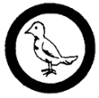

Pigeon Raising
- Do the following:
- House at least two flock units (two pairs) of pigeon having selected the particular breed or variety of squab, racing, or exhibition pigeon which you have decided to develop as a project for this Merit Badge. Give reasons for such selection.
- Care for such flock units for sufficient time to raise to maturity at least two pairs form each original pair of birds.
- Submit a rough sketch drawn to approximate scale showing size, location, and interior equipment of loft or coop and aviary. Describe briefly equipment you have made.
- Submit a brief formula for seeds and grit used, and an outline of a week's schedule of feeding - indicating whether you have mixed the ration, or used a commercial brand.
- Submit a brief report covering the method and schedule of sanitation, your experience with mice, vermin, or any other difficulties you had overcome in handling this project.
- Present an itemized account of all birds sold or disposed of while undertaking your project or a statement of flock increase in number and approximate current market value.
- Present an itemized account of all expenditures for stock, quarters, equipment, and other incidental items.
|